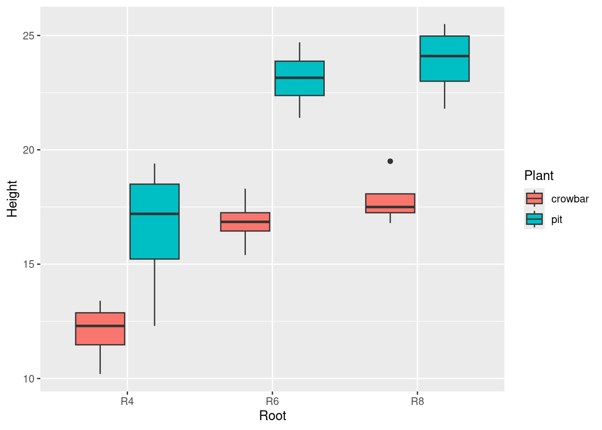
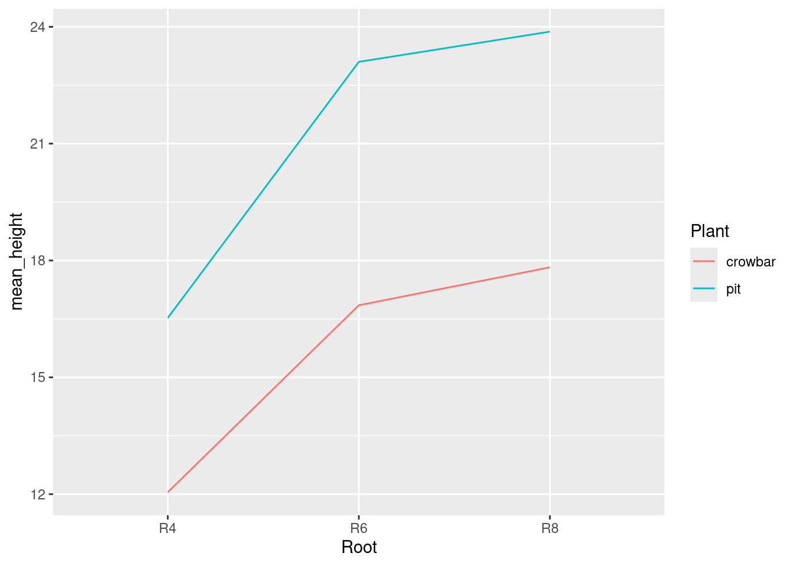
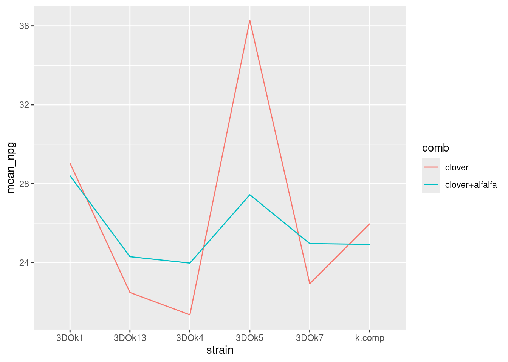

── Conflicts ────────────────────────────────────────── tidyverse_conflicts() ──
✖ dplyr::filter() masks stats::filter()
✖ dplyr::lag() masks stats::lag()
ℹ Use the conflicted package (<http://conflicted.r-lib.org/>) to force all conflicts to become errors
Rows: 24 Columns: 4
── Column specification ────────────────────────────────────────────────────────
Delimiter: ","
chr (3): Block, Plant, Root
dbl (1): Height
ℹ Use `spec()` to retrieve the full column specification for this data.
ℹ Specify the column types or set `show_col_types = FALSE` to quiet this message.
teak
# A tibble: 24 × 4
Block Plant Root Height
<chr> <chr> <chr> <dbl>
1 I pit R4 18.2
2 I pit R6 23.6
3 I pit R8 24.8
4 I crowbar R4 12.7
5 I crowbar R6 15.4
6 I crowbar R8 16.8
7 II pit R4 16.2
8 II pit R6 22.7
9 II pit R8 23.4
10 II crowbar R4 11.9
# ℹ 14 more rows
ggplot(teak, aes(x = Root, y = Height, fill = Plant)) +geom_boxplot()

Both categorical variables are explanatory, but there are three levels of Root and only two of Plant , so its better to put Root on the x-axis and have only two colours for Plant .
Based on the boxplot when the planting method is Pit, the plant has a greater height on average than when the planting method is Crowbar, and the amount by which it is higher is about the same for each root length. Thus, it is expect to see a Plant effect that is the same for each root length: that is, no interaction between planting method and root length. To reaffirm our point we can draw an interaction plot and see whether it tells the same story as the boxplots. Note (it should, except for the fact that an interaction plot uses means and the boxplots use medians)
teak %>%group_by(Root, Plant) %>%summarize(mean_height =mean(Height)) %>%ggplot(aes(x = Root, y = mean_height, colour = Plant, group = Plant)) +geom_line()
`summarise()` has grouped output by 'Root'. You can override using the
`.groups` argument.

Indeed those two traces do indeed look pretty close to parallel.
teak.1<-aov(Height ~ Root * Plant, data = teak)summary(teak.1)
We can conclude that there are significant main effects, of root length (P-value 4.1 × 10−7) and of planting method (P-value 1.5 × 10−7). To find out what kind of effects they are, we run Tukey (which is necessary because there are three different root lengths):
The Plant analysis here doesn’t tell us anything we haven’t already seen: when the Pit planting method is used, the height is on average greater than for the Crowbar method. The Root analysis, however, does tell us something new: the height for plants that had root length 4 inches is significantly less than for plants with either of the other two root lengths (which are not significantly different). There is no value in doing simple effects here, because the interaction is not significant.
Rows: 60 Columns: 5
── Column specification ────────────────────────────────────────────────────────
Delimiter: ","
chr (2): comb, strain
dbl (3): weight, nitro, Npg
ℹ Use `spec()` to retrieve the full column specification for this data.
ℹ Specify the column types or set `show_col_types = FALSE` to quiet this message.
ggplot(clover_means, aes(x = strain, y = mean_npg,colour = comb, group = comb)) +geom_line()

This is a plot of the mean value of Npg (y-axis) for each combination of comb and strain . One of the explanatory variables goes on the x-axis, and the other is colour.
The major reason for drawing an interaction plot is to see whether we have an interaction, and that’s assessed by making a call about whether the lines on your plot are parallel. Here, it seems clear that they are not: the strain 3DOk5 seems very different from the others. So we would expect to see an interaction.
clover.1<-aov(Npg ~ comb * strain, data = clover)summary(clover.1)
The interaction is significant (which is our finding from the ANOVA), so a suitable technique would be to use simple effects to understand what that significant interaction actually means.
clover %>%filter(strain =="3DOk7") -> d1d1.1<-aov(Npg ~ comb, data = d1)summary(d1.1)
Df Sum Sq Mean Sq F value Pr(>F)
comb 1 10.322 10.322 10.51 0.0118 *
Residuals 8 7.854 0.982
---
Signif. codes: 0 '***' 0.001 '**' 0.01 '*' 0.05 '.' 0.1 ' ' 1
There is a significant difference in nitrogen content between the two cultures of 3DOk7. To see which way around they are, look back at the interaction plot to see that the nitrogen content of the pure clover culture is lower than for the clover plus alfalfa culture. Or, we can perform Tukey (which is otherwise pointless) to see the same thing:
TukeyHSD(d1.1)
Tukey multiple comparisons of means
95% family-wise confidence level
Fit: aov(formula = Npg ~ comb, data = d1)
$comb
diff lwr upr p adj
clover+alfalfa-clover 2.031939 0.586832 3.477045 0.0118345
The mean nitrogen content for clover plus alfalfa is higher than for just clover (by between 0.5 and 3.5 units). Tukey is otherwise pointless here because there are only two levels of comb (two cultures of this strain), and we know they are significantly different.
clover %>%filter(strain =="3DOk1") -> d2d2.1<-aov(Npg ~ comb, data = d2)summary(d2.1)
Df Sum Sq Mean Sq F value Pr(>F)
comb 1 1.01 1.013 0.09 0.772
Residuals 8 90.12 11.265
This is not significant
The ANOVA earlier found a significant interaction. This means that the effect of comb will be different for the different strains. In particular, we found from the simple effects analyses that there is no effect of comb for strain 3DOk1 , but there is an effect for strain 3DOk7 : that is, the effect of comb depends on which strain you are looking at.